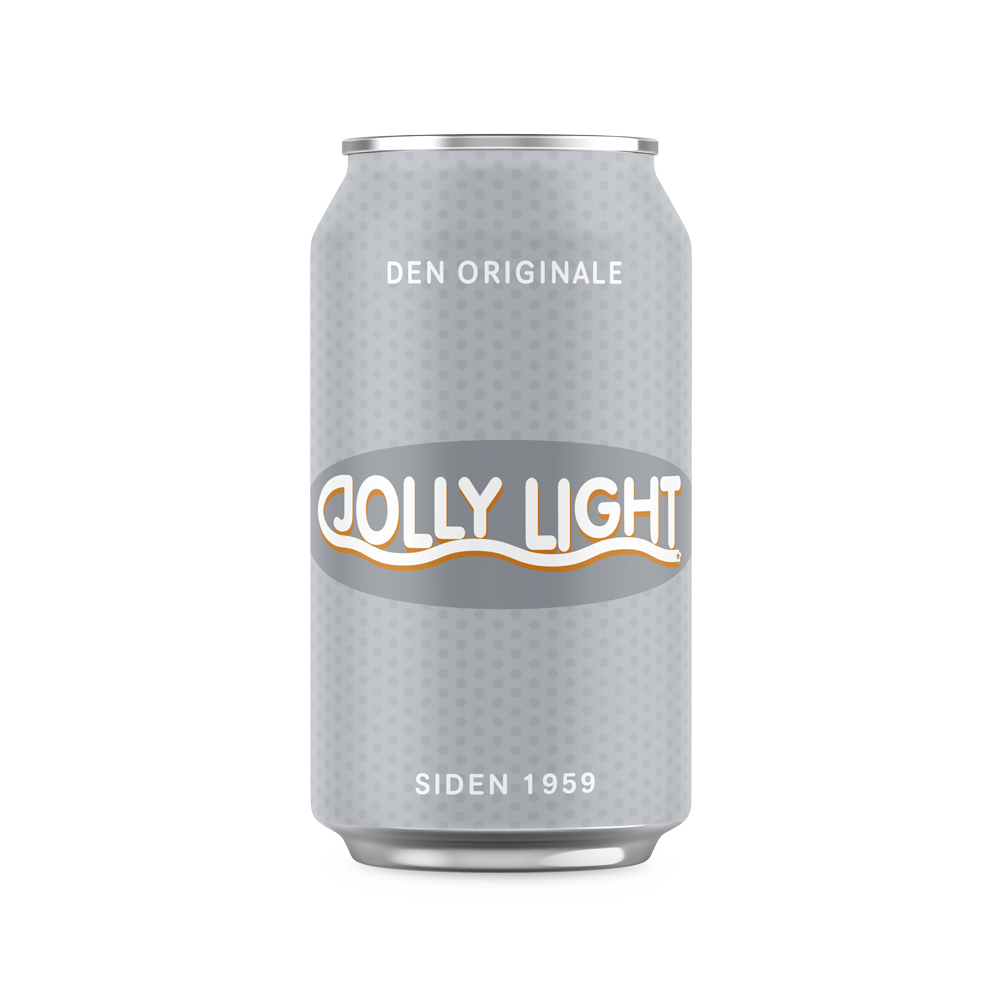
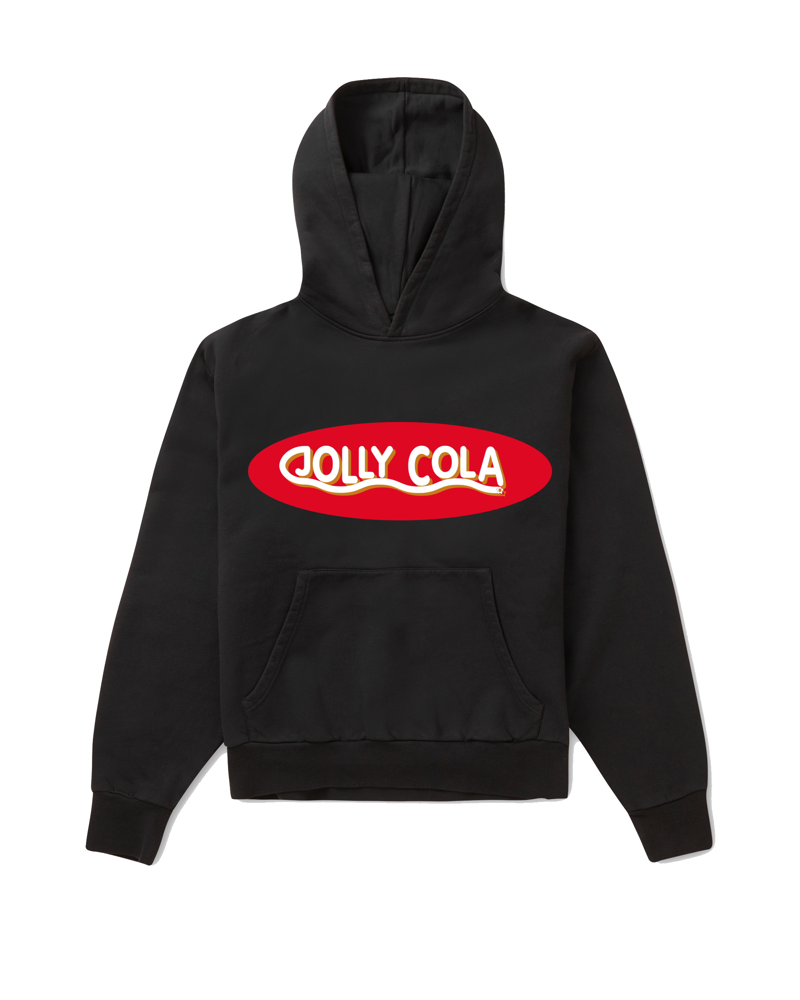

Vores Produkter
Til dem, der ikke har behov for at følge strømmen og er ligeglade med, om de skiller sig ud. Til dem, der holder med den lokale fodboldklub i medgang og modgang. Til dem, der elsker udflugter til de danske strande om sommeren. Til dem, der synes brun sovs og kartoffelchips går hånd i hånd. Til dem, der er fuldstædigt ligeglade med, hvad andre synes om dem og deres holdninger. Og sidst, men ikke mindst, til dem der sætter pris på det danske, det ægte og æren! Jolly er til alle! Dem der nyder det originale og det at være original!
Drikkevarer
Selvom vores originale smagsvariant, Jolly Cola, er den mest kendte, har vi også mange andre forfriskende drikkevarer, så vi har noget til enhver smag!
Jolly Cola
Den originale danske Jolly Cola. Den har været på markedet siden 1959 og er en vigtig del af alle originalers dagligdag.
Sød, frisk og læsekende - som en rigtig cola skal være.
Fås i 50 cl. og 200 cl. flasker samt i 33 cl. dåse.
Jolly Cola Light

Den originale og velkendte smag blot uden tilsat sukker. Så hvis ikke du vil gå på kompromis med den gode smag er det sikre valg for dig Jolly Cola Light.
Fås i 50 cl. og 200 cl. flasker samt i 33 cl. dåse.
Jolly Time
Er du lidt mere frisk anlagt? Jolly Time er danskernes originale sportssodavand med en frisk smag af lime og citron.
Fås i 50 cl. og 200 cl. flasker samt i 33 cl. dåse.
Merchandice
Vis din danske stolthed frem! Vi har et større udvalg af merchandice i form af t-shirts, hoodies og glas! Vis din kærlighed til Jolly eller giv en gave der vil sprede glæde for modtageren. Nedenfor ses et mindre udvalg af vores nyeste styles!
Jolly Tee
En t-shirt så du kan vise din Jolly-stolthed frem til alle og enhver! På samme tid er det en god samtaleåbner til, hvorfor Jolly Cola er den bedste forfriskning! Find den her!
Jolly Hoodie
Hvis din ideele fredag aften også består af en kold Jolly Cola, bland selv slik og komfortabelt lounge wear så er vores Jolly hoodie det perfekte match til dig! Find den her!